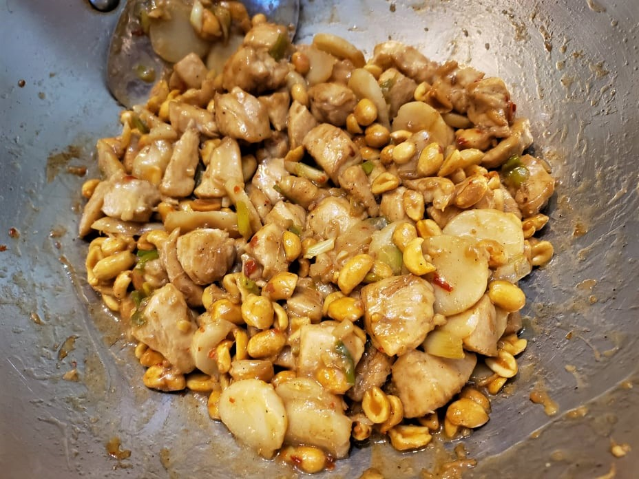

Kung Pao Chicken

Ingredients:
Marinade:
- 1 lb Chicken breast, cubed
- 1 tsp Vegetable oil
- 1 tsp Cornstarch
- 1 tsp Shaoxing wine
- 1/8 tsp Salt
- 1/8 tsp White Pepper
Sauce:
- 1 tbsp Light soy sauce
- 1/2 tsp Dark soy sauce
- 1 tbsp Rice wine vinegar
- 1 tsp Brown sugar
- 3 tbsp Water
- 1 tsp Cornstarch
Other Ingredients:
- 3 tbsp Vegetable oil
- 6 Scallions, white parts only, cut diagonally into 3/4 inch pieces
- 3 cloves Garlic, minced
- 2 slices Ginger, minced
- 2 Dried red chilies, deseeded and roughly minced
- 1/2 tsp Sichuan peppercorn powder
- 1 cup Roasted peanuts
- Optional: 8 oz Sliced water chestnuts
- Optional: 8 oz Sliced bamboo shoots
Instructions:
- Combine the marinade ingredients and let chicken marinate overnight.
- Prepare the sauce. Mix together all the sauce ingredients in a bowl and set aside.
- Heat 2 tablespoons oil in a wok over high heat. Sear the chicken, remove from the wok and reserve.
- Turn the heat to low and add another tablespoon oil. Add the garlic, ginger, chilies, Sichuan peppercorn powder, and scallions. Cook for 1-2 minutes or until fragrant.
- Add the chicken back to the pan and turn up the heat to high. Stir-fry for about a minute. Then quickly mix the sauce in its bowl (to make sure the cornstarch is not settled at the bottom) before stirring it into wok. Stir-fry for another minute or until the sauce is very thick.
- Stir in the peanuts and optionally the water chestnuts or bamboo shoots until well incorporated.